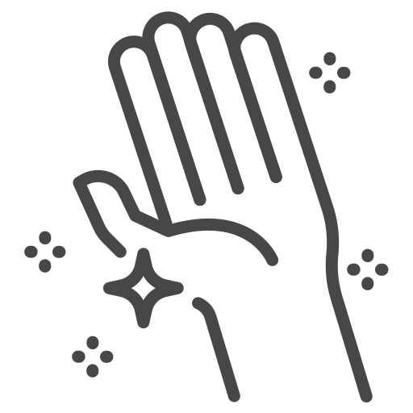

Для взрослых
Групповой МК
Индивидуальное занятие
Занятие за гончарным кругом
Роспись готового изделия
МК 'Дружная компания'
Мозаика из витражного стекла
Для детей
Групповой МК
Вместе с родителями
Занятия за гончарным кругом
Роспись готового изделия
МК для дружной компании
Мозаика из витражного стрекла
Подготовка к занятию
Мы заботимся о том, чтобы наши занятия были максимально комфортными для вас и предоставляем всё необходимое: материалы, инструменты, фартуки и т.д. Однако, есть несколько вещей, к которым необходимо подготовиться и вам! Они приносят большие неудобства и не могут обеспечить комфортную работу с глиной!
Неподходящая одежда
- 
Длинные ногти
Распущенные волосы
Подарочные сертификаты
Наши работы
Процесс изготовления керамики
Изготовление (лепка / гончарный круг).
✔ Ручная лепка – создание формы из пласта, жгутов или цельного куска глины
✔ Работа на гончарном круге – формирование симметричных сосудов.
✔ Детализация – добавление ручек, рельефа, декоративных элементов.
🔹 Глина должна быть однородной, без пузырьков воздуха.Сушка(естественная)
Прежде чем попасть в печь, изделие должно пройти сушку.
✔ От 3 до 7 дней при комнатной температуре (зависит от размера изделия, окружающих условий и вида глины).
✔ Важно:
-Изделие должно высыхать равномерно.
-Избегать сквозняков и резких перепадов температуры.
-Проверять на отсутствие трещин.
🔹 На этом этапе изделие («сырец») становится твёрдым, но еще может быть доработано.Первый обжиг (утильный)
Чтобы глиняное изделие стало керамическим, его нужно обжечь.
✔ Температура: 900-1100°C (зависит от типа глины).
✔ Результат:
-Глина переходит в камневидного состояния.
-Появляется пористость для глазури.
-Исчезают органические примеси.
От нагрева печи и до её полного остывания проходят целые сутки!
🔹 После обжига изделие можно шлифовать и покрывать глазурью.
Глазуровка (роспись, поливка, окунание)
Керамика после обжига остаётся пористой. Это значит, что она будет впитывать воду и может протекать. Покрытие глазурью делает изделие водонепроницаемым и более прочным.
✔ Виды покрытий:
-Глазури (прозрачные, цветные, с эффектами);
-Ангобы (цветные глиняные краски);
-Надглазурные и подглазурные краски (для тонкой росписи);
🔹 Важно наносить глазурь равномерно, избегая подтеков.Второй обжиг (политой, глазурный)
После нанесения глазури, изделие должно пройти ещё один обжиг при температуре 1100-1300 градусов.
✔ Во время обжига:
-Глазурь плавится, образуя стекловидный слой;
-Цвета становятся ярче;
-Изделие приобретает водостойкость.
🔹 От нагрева печи и до её полного остывания проходят целые сутки!Готово!
Так рождается керамика. Этап за этапом, обжиг за обжигом.
"Это как воспитание ребёнка: нельзя пропустить ни один этап взросления".
🔹 В среднем весь процесс занимает от 10 до 16 дней.
Керамика — живой материал, и даже при идеальной технологии иногда случаются неожиданности.
Почему так случается?
✔ Природные свойства глины – усадка, трещины при сушке;
✔ Химия глазурей – непредсказуемые реакции в печи;
✔ Человеческий фактор – ручная работа всегда имеет небольшие вариации.
"Идеальная симметрия - фабричная керамика. Вещь с историей - живая керамика, которая всегда будет хранить
тепло ваших рук♥️".
Записаться на занятие
тел.: +7(905)357-18-55
тел.: +7(905)355-10-75
WhatsApp: kumertauglina
Telegram: kumertauglina
VK: vk.com/kumertauglina
Email: karakulinaanna@ya.ru
г.Кумертау, ДК Рассвет,
ул.Ломоносова, д.31В, 37 кабинет